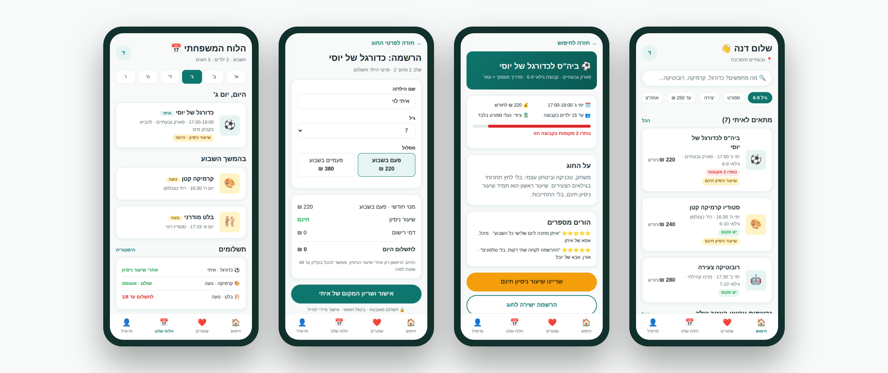
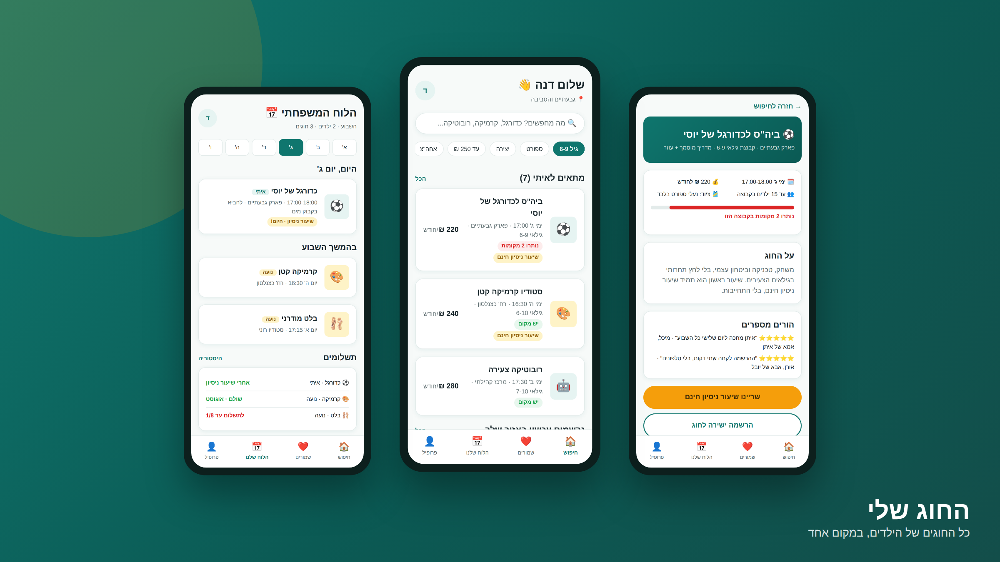
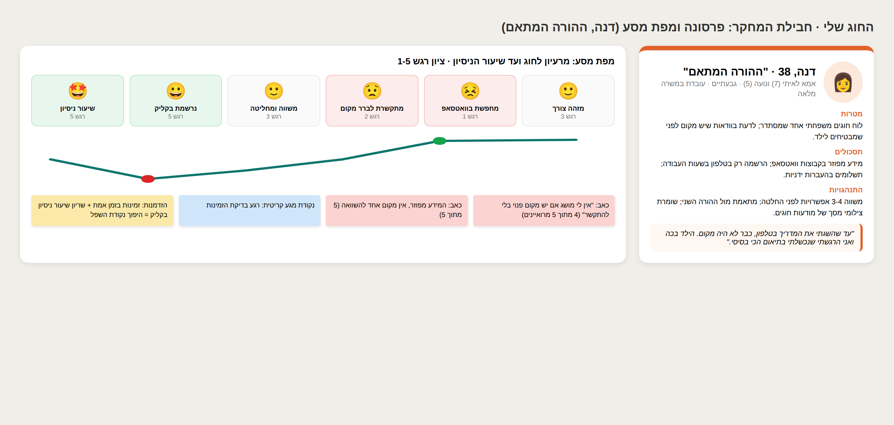

דוגמת לימוד למפגש הקייס סטאדי: כך נראה קייס חלש. אותו פרויקט בדיוק, כתיבה אחרת. העמוד לא מקושר מהאתר.
פרויקט UX/UI - אפליקציית חוגים
פרויקט גמר שעשיתי בקורס עיצוב. עיצבתי אפליקציה לחוגים לילדים עם חוויית משתמש חדשנית וממשק נקי ואינטואיטיבי.

התהליך שלי
התחלתי את הפרויקט בשלב המחקר. ביצעתי מחקר משתמשים מעמיק ומקיף כדי להבין את הצרכים של המשתמשים. המחקר כלל ראיונות עומק עם משתמשים פוטנציאליים, ניתוח מתחרים מקיף וסקירת ספרות בתחום. לאחר מכן עברתי לשלב הפרסונות, שבו בניתי פרסונות מפורטות על בסיס המחקר. פרסונה היא כלי חשוב בעיצוב UX שמאפשר למעצב להבין את קהל היעד בצורה טובה יותר. אחרי הפרסונות בניתי מפות מסע לקוח מפורטות לכל פרסונה, שמתארות את כל השלבים שהמשתמש עובר. בשלב הבא עברתי לארכיטקטורת מידע ובניתי Sitemap מקיף של כל המסכים באפליקציה. לאחר מכן עיצבתי ויירפריימים בפידליות נמוכה, בינונית וגבוהה, וקיבלתי פידבק. בסוף עיצבתי את המסכים הסופיים בהקפדה על עקרונות עיצוב מודרניים.
העיצוב
בחרתי בפלטת צבעים ירקרקה כי היא נעימה לעין ומשדרת רוגע. הטיפוגרפיה נבחרה בקפידה כדי להיות קריאה ונעימה. הקפדתי על עקביות בכל המסכים ועל חוויית משתמש חלקה וזורמת. האפליקציה עוצבה בגישת Mobile First עם דגש על נגישות ושמישות מקסימלית.


סיכום
זה היה פרויקט מאתגר ומלמד מאוד. למדתי המון על תהליך העיצוב ועל עבודה עם כלים מתקדמים. אני מאמין שהאפליקציה פותרת בעיה אמיתית ומספקת ערך רב למשתמשים. אשמח לענות על שאלות!